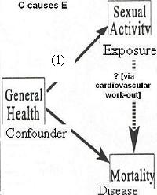
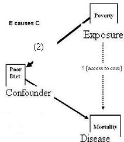
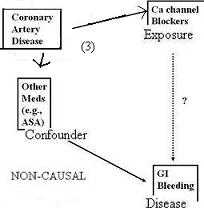

Properties of a Confounder - Association with Exposure
Lead Author(s): Jeff Martin, MD
Refined Properties of a True Confounder - Association with Exposure
When we say the confounder has to be associated with the exposure - what do we mean?
A confounding variable can be either:
(1) Cause of the exposure (arrow pointing from the confounder to the exposure),
(2) Result of the exposure (arrow pointing from the exposure to the confounder),
(3) Related to the exposure in a non-causal fashion (the double-headed arrow from the exposure to the confounder).
Confounder Causes the Exposure
DAG - Confounder Causes the Exposure

Given the research question: Is sexual activity associated with survival independent of general health?
Consider the diagram below where we are looking at whether sexual activity influences mortality, say,
- via a mechanism of getting a cardiovascular work out.
If this is the research question, then a person's general health may be a confounder in this relationship because good health is generally associated with having more sexual activity (i.e. the confounder causes the exposure in question).
- And, general health also, of course, influences mortality.
Confounder Is the Result of the Exposure
DAG - Confounder Is the Result of Exposure

Given the research question: Is poverty associated with survival independent of effects on diet?
Consider the case below where we are looking at the exposure in question causing the confounder.
- Situations like this remind that it is very important to be clear about the research question.
Assume that we all know and agree that poverty influences overall through effects on diet.
- More poverty leads to poor diet (defined in some way) which leads to shorter survival.
Then, the next research question may be whether there is a another mechanism by which poverty influences survival --
- perhaps by way of poor access to medical care.
If that is the question, then poor diet becomes a confounding factor and
- we need to deal with it if we are going to get a valid answer to our research question.
Therefore, this is an example where the exposure (E) is a cause of the confounding variable (C).
These kind of situations come up all of the time in research.
Even though poor diet is one pathway, it becomes a potential confounding variable when we begin to research other pathways under investigation.
- Whether or not a given variable is sitting right on the causal pathway in question or whether it is a confounder simply depends upon the research question.
You have to have your research question in mind once you begin to assign roles to variables.
Confounder Associated with the Exposure in a Non-causal Manner
DAG - Confounder Associated in a Non-causal Manner

Given the research question: Are Ca channel blockers associated with GI bleeding independent of other med use?
Consider the diagram below where we are looking at a non-causal association between the confounder and the exposure.
For example, if we were interested in studying the relationship between Ca channel blockers and GI bleeding,
- we have to be concerned about confounding by other medications.
Here, having coronary artery disease may cause persons both:
- to use Ca channel blockers and
- other meds (perhaps ASA).
So, while the confounder in question (other meds) and the exposure (ca channel blockers) are related,
- it is non-causal through a separate pathway.